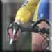

|
|||||||||||||||||||||||||||||||||||||||||||||||||||||||||||||||||||||||||||||||||
| To a variety of Cycling related web sites...... | |||||||||||||||||||||||||||||||||||||||||||||||||||||||||||||||||||||||||||||||||
|
|
Scottish
Racing Clubs & National organisations
Framebuilders
Classic Bicycle Websites
Miscellaneous Classic Web Sites
|
||||||||||||||||||||||||||||||||||||||||||||||||||||||||||||||||||||||||||||||||
'The Flying Scot' website Copyright © 2011 Bob Reid - Last Updated 20 August, 2012 1:01hrs |
|||||||||||||||||||||||||||||||||||||||||||||||||||||||||||||||||||||||||||||||||